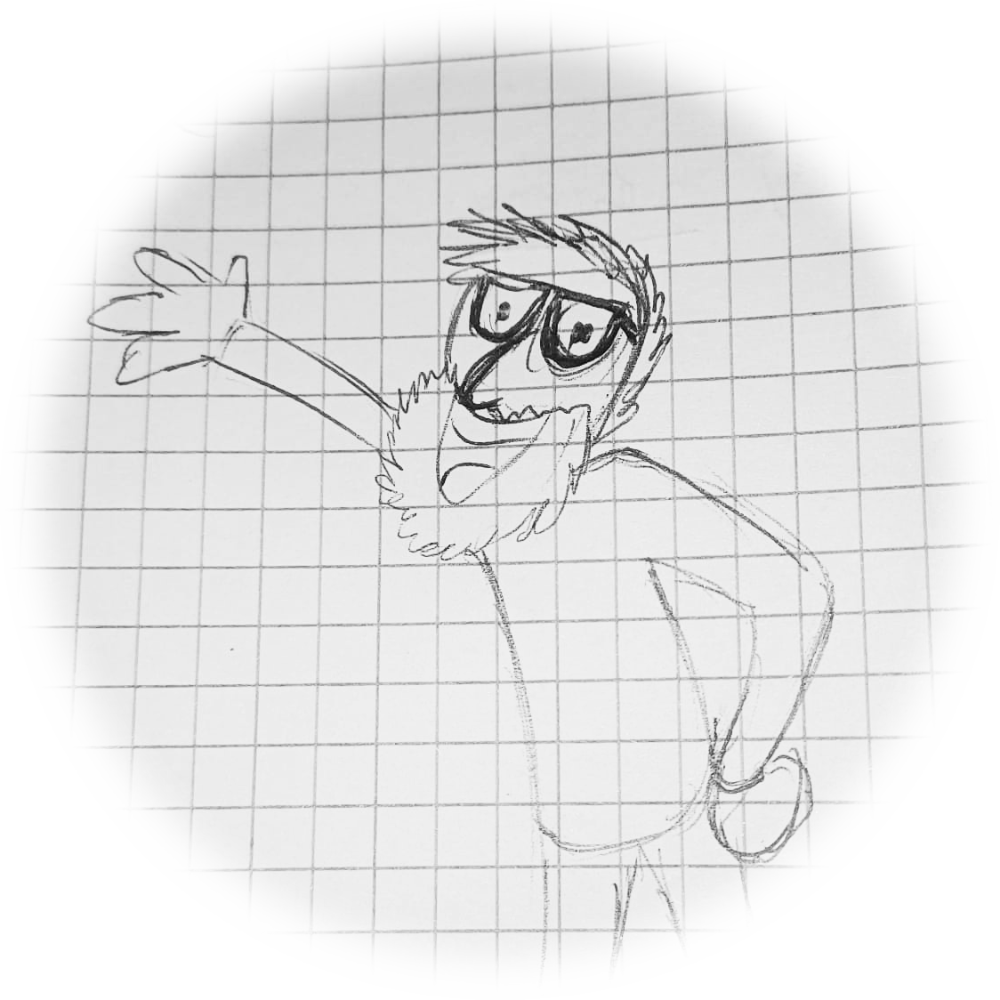
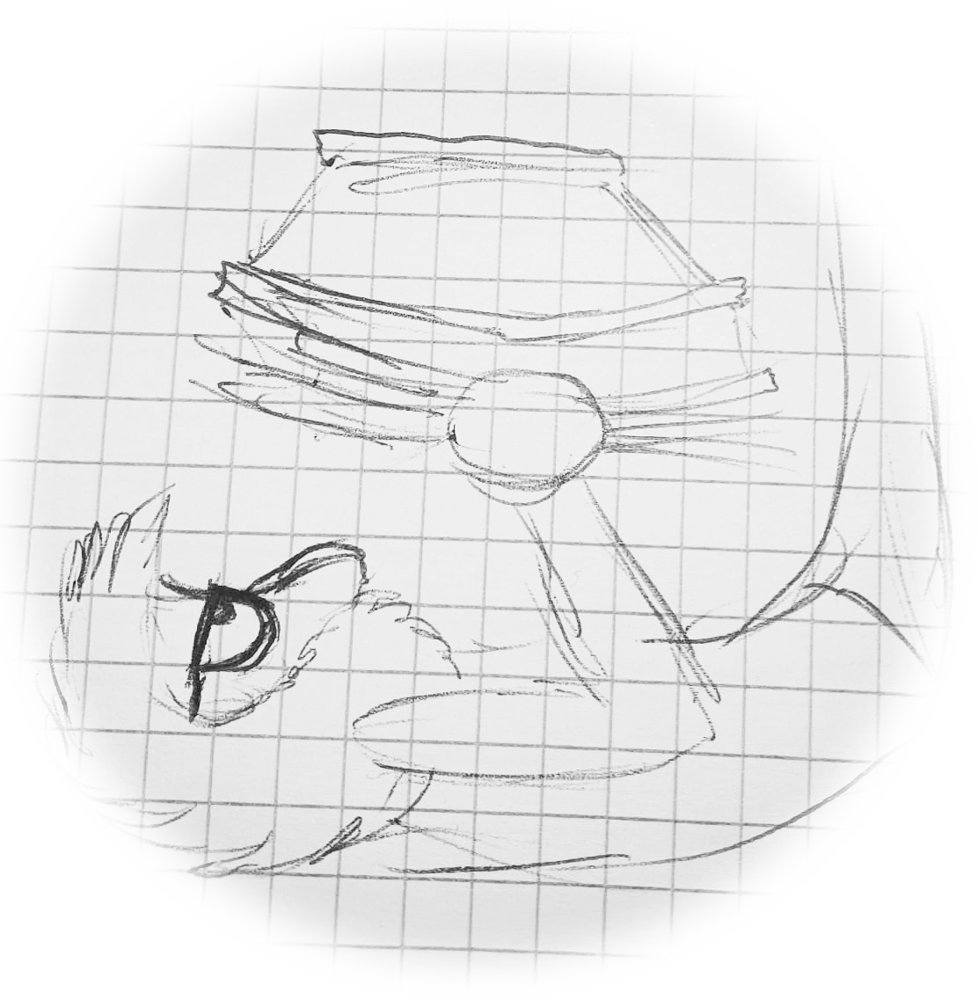
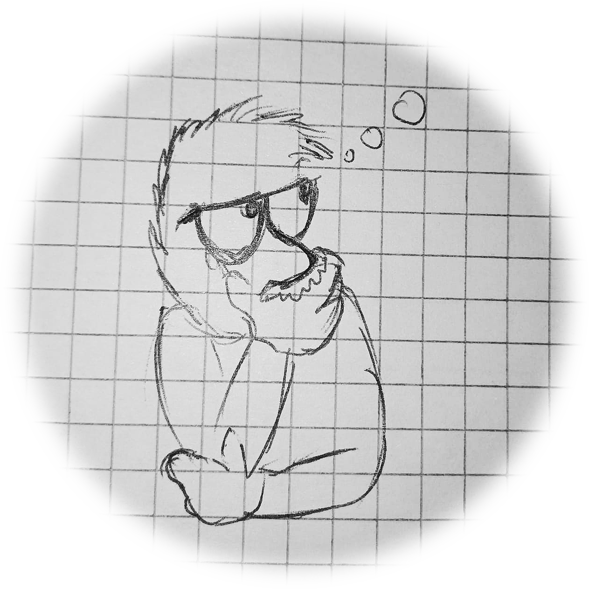
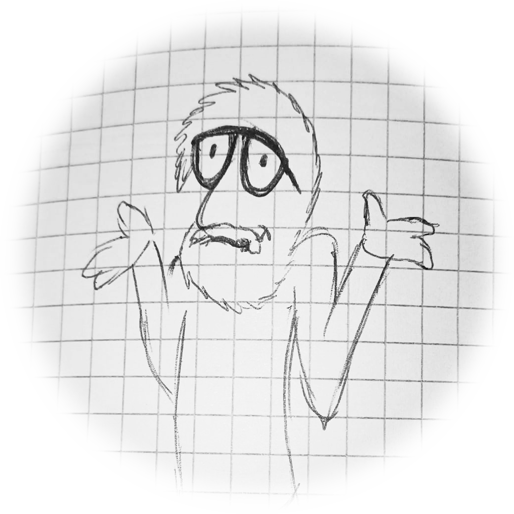
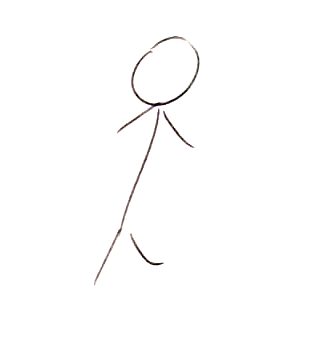
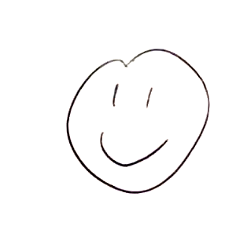
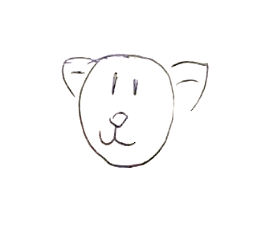
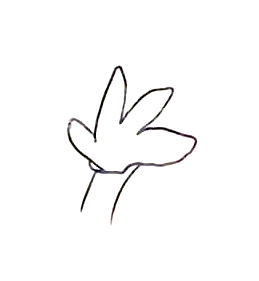
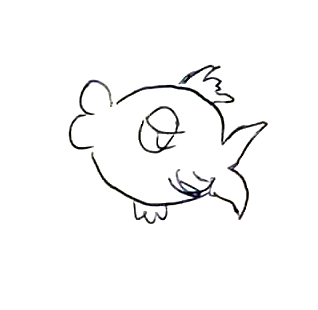
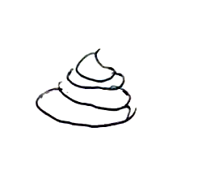

Oi, io sono Vito
Dunque sei qui per sapere i fatti miei, eh? E va bene, ora mi spiego:

Chi sono?
Un essere umano nato in Sicilia con il gene della curiosità per la tecnologia e la creatività. Mi piace osservare ed estrapolare un ragionamento dietro l'uso delle cose. E perché no, modificarlo, riadattarlo, ottimizzarlo.


Che cosa so?
Stando alla cronologia sul mio cervello, ho frequentato:
- L'IStituto Alberghiero "Ignazio e Vincenzo Florio" di Erice C.S.
- Diploma di Maturità;
- L'Accademia di Belle Arti Kandinskij di Trapani
- Laurea Triennale in Sviluppo Grafico per l'Impresa;
Che faccio?
Scarabocchio disegni a mano o col tablet, do' forma ai loghi, bestemmio sui codici, talvolta mi diletto al taglia e cuci dei video, degli audio e dei sottotitoli. Ho alcune capacità nel maneggiamento del 3D e nella stesura di articoli indicizzati.
Parlicchio in inglese (e qualche volta coi gatti.) e mi organizzo sempre prima di afforntare la giornata. Se mi chiedi se posso modificare qualche contenuto multimediale, probabilmente ti risponderò "beh, perché no, vediamo che succede".

E che ho fatto?
La mia fedina professionale mi vede coinvolto in:
- Cameriere presso varie attività ristorative ed eventi;
- Centralinista per presa appuntamenti di Contratti Luce / Gas; (entrambi ci stiamo chiedendo se ti ho rotto le scatole al telefono, vero?)
- Doposcuola al Progetto Giovanicrazia, insegnando l'uso della Tavoletta Grafica
- Blogger di articoli sui videogiochi;
- Colorista di Fumetti italiani;
- Commesso di negozio;
Qualche manufatto digitale che ho realizzato






Ok... come trovarmi?
Non serve alcun hacking, mi puoi trovare telefondandomi a questo numero: ░░░░░░░░░░; Oppure googlandomi su ░░░░░░░░░░░░░░░░░░░░░░░░░░░░░░
Tutto qui?
Si lo so, è una roba terribile!😤 Forse è il caso di ricominciare tutto daccapo.